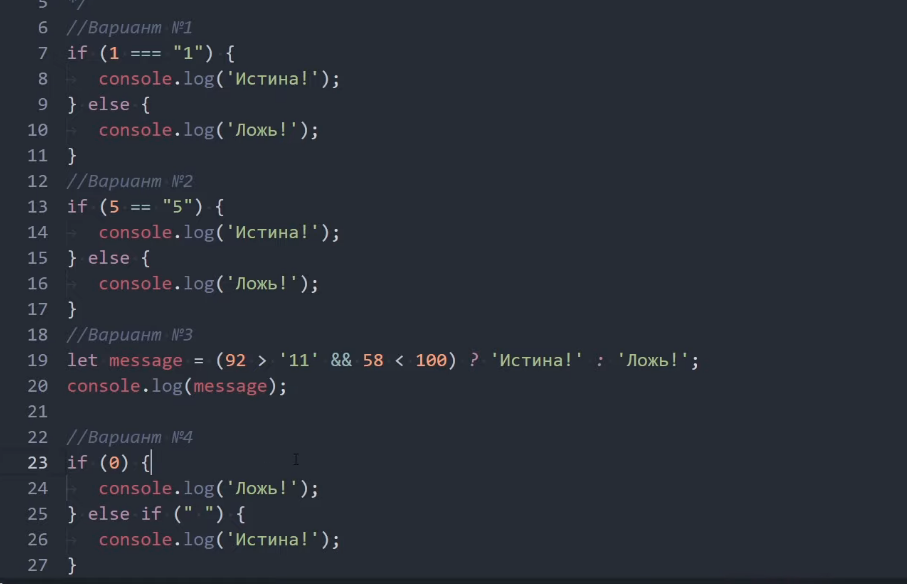

Варіант №1) неправильно, викликало 35-22, щоб викликало 13, потрібно написати без +
Варіант №2) правильно, викликало 770
Варіант №3) неправильно, викликало помилку, через інкремент
Варіант №4) неправильно, викликало 0
Варіант №5) викличе 11 так як в першому рівнянні (!false && 11) викличе друге true, в
другому рівнянні (18 && !'') викличе друге true, а оператор || викличе перше true
Варіант №5) викличе 0, так як він не null чи undefined
IF ELSE в JAVASCRIPT. Умовний оператор "?".

Варіант №1) викликало Брехня!
Варіант №2) викликало Істина!
Варіант №3) викликало Істина!
Варіант №4) викликало Істина!
Цикли FOR і WHILE в JavaScript. Директиви break и continue.
Задача №1
for (let num = 1; num < 6; num++) {
console.log(num); }
Задача №2
let num = 8;
while (num) {
console.log(num);
num--;
}
Остальний результат 1, 0 не виводиться так як 0 буде false
Задача №3
let num = 0;
while (num < 3) {
console.log(`Число: ${num}`);
num++;
}
Задача №4
//Цикл №1
oneCicle: for (let num = 0; num < 2; num++) {
//Цикл №2
for (let size = 0; size < 3; size++) {
if (size == 1) {
break oneCicle;
}
console.log(size);
}
}
Числа в JAVASCRIPT. Тип даних number. Робота з числами.